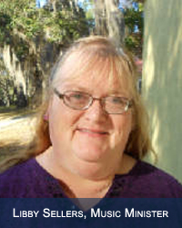

Libby Seller
Season’s Greetings to everyone at St. Matthews Parish! My name is Libby Sellers and I am going to be the Parish Musician here, beginning in the new year. I am looking forward to serving with you and for you in the music ministry.
I come from a musical family. My sister, brother, and I all play instruments, and have served in church music ministry during our adult lives. My mother, a very talented musician, all taught us to play the piano, because this was her way of sharing herself with us. She also did many things to encourage our spiritual growth. My sister and I decided to major in music.
I earned a Bachelor’s degree in Music Education at East Carolina University, in Greenville, North Carolina. Did I mention that I was a Tarheel from many generations back? My family has lived in North Carolina since before the Revolutionary War, so I am a PROUD Tarheel. I met my husband, Dan, at school. He is a fine organist, and has been a church musician for several years. He is also a nurse. We have a college-age son, Paul, who is our pride and joy.
I am a career music teacher; I have taught school for over twenty-five years. I am currently teaching at St. Andrew Catholic School in Orlando. I have also taught English, Social Studies, and Theater Arts part of the time, because those are three subjects that I am also passionate about! I have participated in community theater here for several years. My dream is to FINALLY play the Mother Abbess role in a production of The Sound of Music. I have played two of the other “big nun” roles, but I have never landed that one yet. Someday… I am also part of a five lady singing group, The St. Andrew Sisters (Yes, we are on youtube). We have a lot of fun, and are available for club meetings, rehearsal dinner parties, etc.
My prayer for you all in the new year is that God will continue to bless St. Matthew’s and the music ministry.